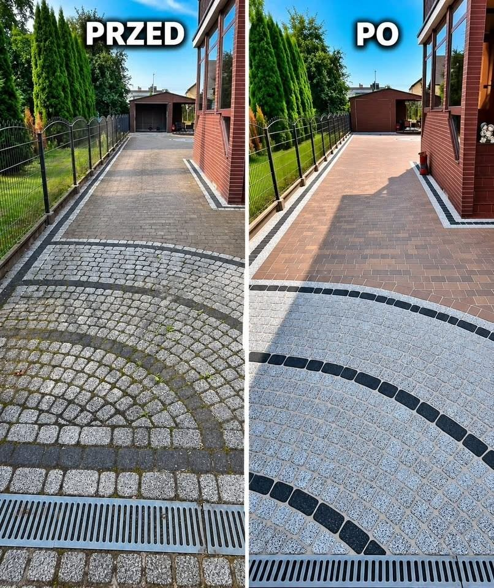

CIŚNIENIOWO
Czysta posesja.
Widoczny efekt.
Mycie ciśnieniowe gorąco- i zimnowodne oraz malowanie — Bieruń i okolice.
Zakres usług
Co robimy
Konkretna robota — kostka, elewacja, dach, malowanie i obiekty.

Nie opisujemy się jak wszyscy. Zadzwoń i zobacz efekt na miejscu.
576 245 168Realizacje
Przed i po
Prawdziwe prace z posesji — kostka, wejścia, elewacje.
Więcej realizacji: Facebook CIŚNIENIOWO
FAQ
Najczęstsze pytania
Krótko i na temat — zanim zadzwonisz.
Ile kosztuje mycie kostki lub elewacji?
Cena zależy od powierzchni, stopnia zabrudzenia i dostępu. Orientacyjnie: kostka od ok. 4–12 zł/m², elewacja od ok. 8–14 zł/m². Po zdjęciach lub wizycie dajemy konkretną wycenę.
Czy mycie ciśnieniowe nie uszkodzi tynku lub kostki?
Dobieramy ciśnienie i dyszę do powierzchni. Przy elewacjach pracujemy możliwie najniższym skutecznym ciśnieniem, żeby nie uszkodzić tynku.
Czy pracujecie tylko w Bieruniu?
Baza to Bieruń, ale dojazd obejmuje Śląsk i Małopolskę. Napisz lub zadzwoń — ustalimy dojazd pod Twój adres.
Czy robicie też impregnację i malowanie kostki?
Tak. Po myciu możemy zaimpregnować, uzupełnić spoiny albo pomalować kostkę — wtedy kolor wraca i powierzchnia jest lepiej zabezpieczona.
Jak się umówić?
Najszybciej zadzwoń pod 576 245 168 albo napisz na Facebooku. Wystarczą zdjęcia posesji i przybliżony metraż.
Kontakt
Umów wycenę
Działamy w Bieruniu oraz na Śląsku i w Małopolsce. Napisz lub zadzwoń — ustalimy termin i zakres.
- Telefon 576 245 168
- Adres ul. Mieszka I 82, 43-155 Bieruń
- Facebook Cisnieniowo.Mycie.Malowanie